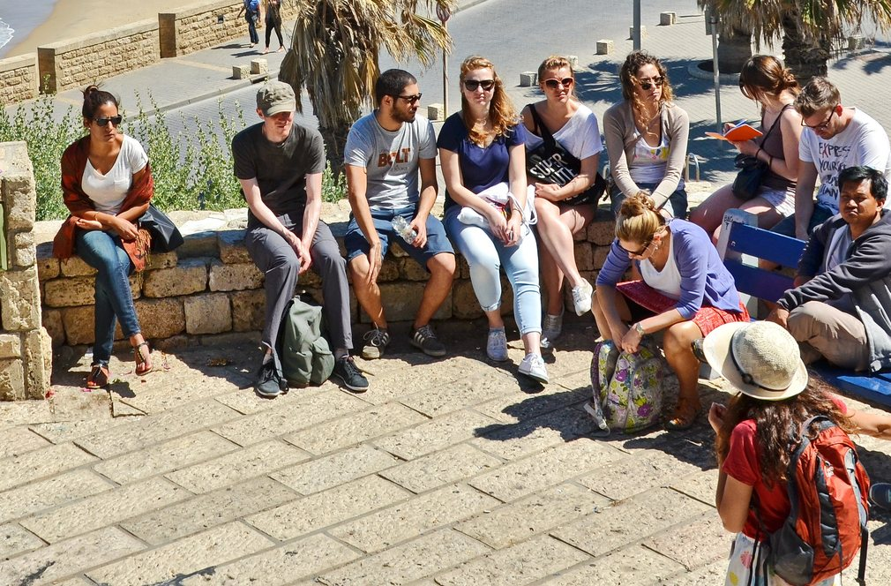

A product from Optimistic Israel
A product from Optimistic Israel
Beineinu בינינו
The Center for Shared Experiences
A year-long intensive that brings together 24–30 Israeli and North American leaders to move from relationship to co-creation.

 Who it's for
Who it's for
Leaders ready to co-create, not just learn about each other.
Beineinu gathers multicultural professionals—educators, social entrepreneurs, artists, and organizational leaders—who want to deepen their practice and impact through genuine Israeli-North American partnership.
What sets Beineinu apart
We don't teach about the other. We learn with the other.
Beineinu is built around a fundamental shift in educational practice.
Bringing diverse professionals together as co-creators, where different experiences, perspectives, and contexts are assets in building meaningful partnerships.
Co-creating knowledge by bringing together people with different experiences and viewpoints—recognizing that diversity of perspective is essential to learning and growth.
Testing ideas collaboratively, grounded in pragmatic optimism, to build knowledge and practices toward the futures we want to inhabit.
Every experience is a threshold propelling participants into deeper practice—leaving with prototypes, tools, relationships, and practices they carry into their communities.
Recognizing that meaningful change happens when excellence is built collectively, and every participant's work ripples through their networks and institutions.
The program
What happens in Beineinu.
A year-long process of relationship building, shared experience, experimentation, and action, moving through four stages: Connect, Immerse, Create, Act.
Connect
The cohort comes together for an intensive in-person experience in Israel.
A connected cohort with a shared sense of purpose and a clear set of questions to explore together.
- Establish the culture and principles of the Lab.
- Identify and recruit the inaugural cohort.
- Begin building relationships before participants meet in person.
- Surface participants' questions, expertise, challenges, and aspirations.
- Establish the research and learning framework for the year.
What you walk away with
- Working prototypes in your field (not just connections).
- A new shared language and framework for Israeli–North American partnership (documented, reusable).
- A live network effect: participants leave as ambassadors in their sectors.
- Ongoing guidance from a curated 5–8 person Israeli/American advisory council.
Launch targeted for Spring 2027.
We're gauging interest in the inaugural cohort now — sign up to be notified when applications open. Beineinu is philanthropically funded, so if you'd like to support the launch as a donor, hit contribute to learn more.